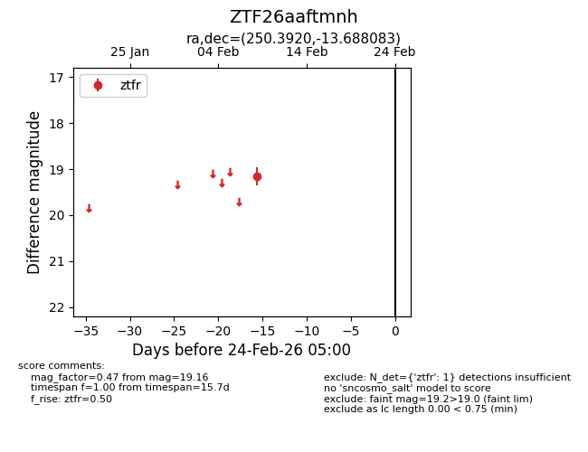
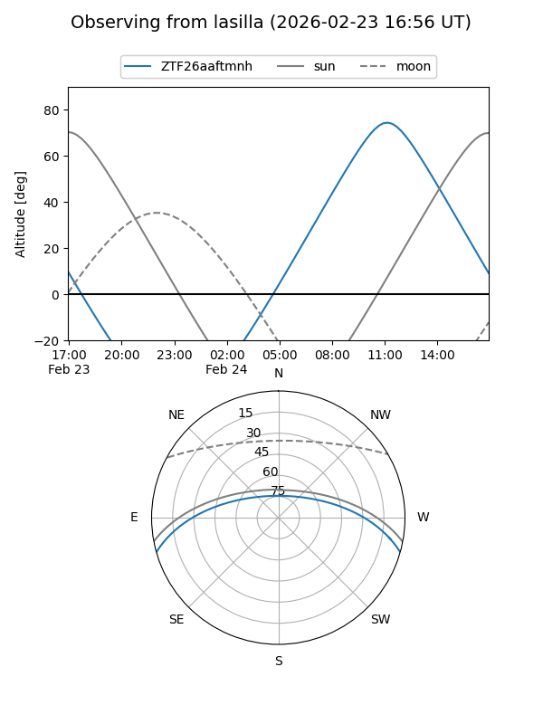
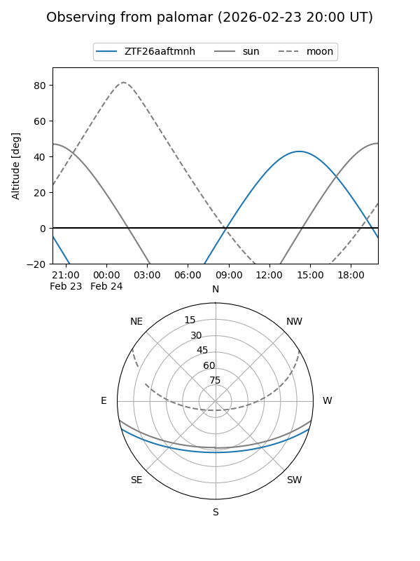

ZTF26aaftmnh
Target ZTF26aaftmnh at 2026-02-24 09:08
Aliases and brokers:
FINK: link
Lasair: link
ALeRCE: link
alt names
ZTF26aaftmnh (ztf,fink_ztf)
Coordinates:
equatorial (ra, dec) = 250.3920,-13.68808
equatorial (HMS+DMS) = 16:41:34.08,-13:41:17.10
galactic (l, b) = (4.2512,+20.87269)
Flags:
Photometry:
last ztfr=19.16
1 ztfr detections
Lightcurve

Visibility


Additional plots